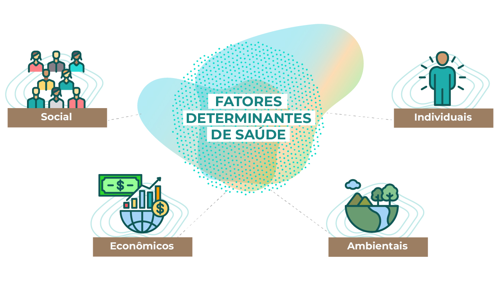
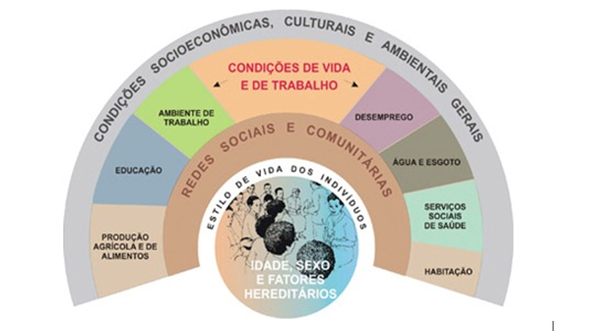
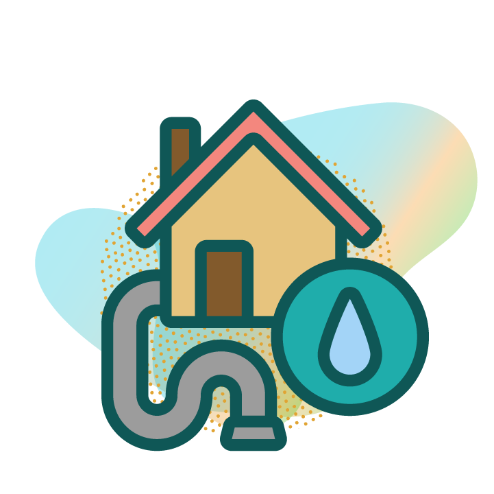
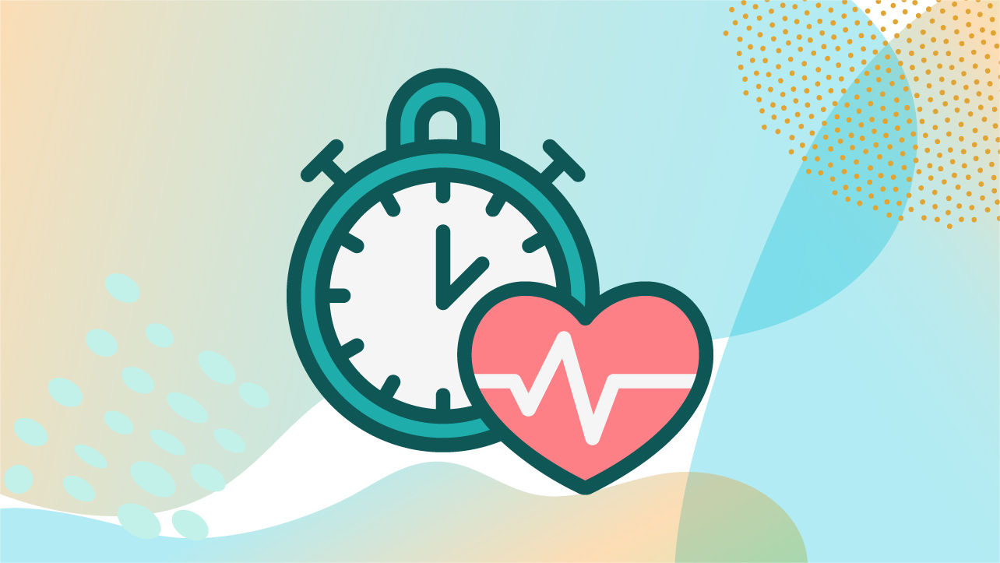

MÓDULO 3 | AULA 5 Exposição por metais e os determinantes sociais de saúde
Determinantes de saúde
Determinantes de saúde são fatores sociais, econômicos, ambientais e individuais que moldam as condições de vida e influenciam diretamente o estado de saúde de indivíduos e populações.

Trata-se de um conceito amplamente reconhecido pela Organização Mundial da Saúde (OMS), entende a saúde como resultado não apenas de fatores biológicos individuais, mas também da forma como a sociedade organiza recursos, distribui renda, oferece oportunidades e estrutura políticas públicas. Assim, os determinantes sociais da saúde são elementos centrais para explicar desigualdades no processo saúde-doença.
- Assista ao vídeo e descubra como os Determinantes Sociais da Saúde influenciam a vida das pessoas.
Determinantes sociais da saúde
Os Determinantes Sociais da Saúde (DSS) são os fatores sociais, econômicos, culturais e ambientais que influenciam diretamente a forma como as pessoas vivem, adoecem e se cuidam. Eles explicam por que a saúde vai muito além do acesso a médicos, hospitais e medicamentos.
“São os fatores sociais, econômicos, culturais, étnicos/raciais, psicológicos e comportamentais que influenciam a ocorrência de problemas de saúde e seus fatores de risco na população.”
CNDSS, 2008
O Modelo de Dahlgren e Whitehead mostra que a saúde das pessoas é influenciada por vários fatores que vão além do corpo e das doenças. No centro do modelo está o indivíduo, e, ao redor, aparecem camadas que representam o modo de vida, as relações sociais e as condições em que as pessoas vivem e trabalham. Esse modelo ajuda a entender que fatores sociais, econômicos e ambientais também influenciam a saúde e devem ser considerados nas ações de saúde pública. Veja imagem a seguir:

Escute o áudio e entenda como o modelo da imagem funciona.
O Sistema Único de Saúde (SUS) reconhece que a saúde das pessoas é influenciada por diversos fatores sociais, econômicos, culturais e ambientais. Por isso, a Lei nº 8.080/1990 estabelece como objetivo do SUS a identificação e a divulgação dos fatores condicionantes e determinantes da saúde, contribuindo para a promoção da equidade e a melhoria da qualidade de vida da população.
Entre os principais determinantes, destacam-se:
Renda e condição econômica
A renda é um dos determinantes sociais mais influentes sobre a saúde, pois define a capacidade das pessoas e famílias de acessar bens e serviços essenciais como alimentação de qualidade, moradia segura, transporte, lazer e, sobretudo, cuidados médicos. Quando a renda é insuficiente, todos esses aspectos ficam comprometidos, aumentando a vulnerabilidade das populações.
Indivíduos e comunidades em situação de pobreza apresentam maior risco de adoecer, tanto por doenças infecciosas (devido à falta de saneamento e infraestrutura) quanto por doenças crônicas e nutricionais (pela dificuldade de manter uma dieta balanceada e acesso a cuidados contínuos de saúde). Além disso, o baixo poder aquisitivo restringe o acesso a meios de prevenção, diagnóstico precoce e tratamento, perpetuando o ciclo de adoecimento.
No caso específico da exposição a metais, a condição econômica desempenha papel central. Populações de baixa renda tendem a:
- Depender de recursos locais contaminados para garantir segurança alimentar, como peixes de rios poluídos por mercúrio ou hortaliças cultivadas em solos impactados por mineração.
- Residir em áreas mais próximas a fontes de poluição ambiental, como regiões industriais, lixões ou terrenos contaminados, devido ao baixo custo da habitação.
- Trabalhar em atividades de risco, como mineração artesanal, reciclagem informal de eletrônicos ou metalurgia, muitas vezes sem equipamentos de proteção adequados.
- Ter menos acesso a alimentos diversificados, o que aumenta a absorção de metais tóxicos. Por exemplo, dietas pobres em cálcio, ferro e zinco potencializam a absorção de chumbo e cádmio no organismo.
- A desigualdade de renda, portanto, não apenas influencia o padrão de vida, mas também molda a intensidade e a forma da exposição a contaminantes, criando cenários em que populações economicamente desfavorecidas estão desproporcionalmente sujeitas a riscos ambientais e de saúde.
- Moradia de qualidade
- Alimentação de qualidade
- Cuidados médicos
- Insegurança alimentar
- Maior vulnerabilidade
- Maior risco de adoecimento
Depender de alimentos contaminados para garantir segurança alimentar
Moradia inadequada (próximo a áreas industriais)
Trabalhar em atividades de risco (ex. mineração artesanal)
O Art. 6º da Constituição Federal de 1988 reconhece como direitos sociais fundamentais: educação, saúde, alimentação, trabalho, moradia, transporte, lazer, segurança, previdência social, além da proteção à maternidade, à infância e da assistência às pessoas em situação de vulnerabilidade. Esses direitos são essenciais para garantir dignidade, bem-estar e cidadania a toda a população.
Educação
A educação é um dos determinantes sociais mais relevantes para a saúde, pois impacta diretamente as oportunidades de emprego, renda e qualidade de vida. Níveis mais elevados de escolaridade ampliam as chances de inserção no mercado de trabalho formal, favorecem maior estabilidade econômica e ampliam a capacidade de acesso a bens e serviços essenciais. Além disso, a educação fortalece o acesso à informação e estimula escolhas mais conscientes em relação aos hábitos de vida, como práticas alimentares saudáveis, atividade física, prevenção de doenças e uso adequado dos serviços de saúde.
Pessoas com maior escolaridade tendem a reconhecer melhor os riscos ambientais, a adotar medidas preventivas e a buscar auxílio médico de forma mais precoce. No nível coletivo, a educação também fortalece a autonomia comunitária, promovendo a organização social para reivindicar direitos e enfrentar problemas sanitários.
No contexto da exposição a metais, a escolaridade desempenha um papel fundamental em diferentes aspectos:
Indivíduos mais escolarizados tendem a compreender os impactos da contaminação ambiental, reconhecendo que o consumo de pescado contaminado ou a presença de resíduos industriais na vizinhança pode representar ameaça à saúde.
Níveis mais altos de educação favorecem dietas mais diversificadas, reduzindo a dependência exclusiva de alimentos contaminados. Em contraste, baixa escolaridade limita a compreensão sobre os efeitos cumulativos dos metais e dificulta a adoção de alternativas seguras.
A escolaridade está diretamente associada à capacidade de compreender orientações médicas, seguir tratamentos adequados e buscar atendimento preventivo.
Populações com maior nível educacional possuem maior capacidade de organização e pressão política para exigir políticas públicas de saneamento, fiscalização ambiental e controle da poluição por metais.
Pessoas com menor escolaridade têm mais empregos expostos a contaminantes.
Pessoas com maior escolaridade costumam procurar mais cedo o sistema de saúde.
A escolaridade pode influenciar positivamente o uso de EPI e a adoção de práticas preventivas.
Maior estabilidade econômica = Maior acesso a bens e serviços essenciais
Saneamento básico

O saneamento básico é um determinante social de saúde fundamental, pois engloba o acesso à água potável, à coleta e tratamento de esgoto e à gestão adequada de resíduos sólidos. A ausência ou precariedade desses serviços aumenta significativamente a vulnerabilidade das populações a diversas doenças, incluindo infecções gastrointestinais, parasitoses e outras doenças transmissíveis, sendo os grupos mais afetados crianças, idosos e pessoas em áreas de maior vulnerabilidade social.
Além dos efeitos diretos sobre a saúde, o saneamento inadequado pode influenciar a exposição a metais de forma indireta, mas igualmente relevante:
pan_tool_alt Clique Toque nas imagens para visualizar as informações.
- Assista ao vídeo “Falta de saneamento é problema de saúde pública”. Entenda como a ausência de saneamento básico impacta diretamente a saúde da população, contribuindo para a disseminação de doenças e para o aumento das desigualdades sociais. O vídeo apresenta, de forma clara e acessível, por que o saneamento é um direito fundamental e uma estratégia essencial de promoção da saúde.
Ambiente laboral
O ambiente laboral é um determinante social de saúde essencial, pois influencia diretamente a exposição a riscos físicos, químicos e biológicos, além de impactar a saúde mental e o bem-estar geral. Ambientes de trabalho inadequados ou precários aumentam a ocorrência de acidentes e doenças ocupacionais, enquanto relações laborais instáveis, ausência de direitos trabalhistas e falta de benefícios sociais contribuem para estresse crônico, ansiedade e menor capacidade de enfrentamento de problemas de saúde.
No contexto da exposição a metais, as condições de trabalho desempenham papel central:
pan_tool_alt Clique Toque nas imagens para visualizar as informações.
- Assista ao vídeo: “Riscos Ambientais – Agentes químicos, físicos e biológicos e o adicional de insalubridade”. O vídeo explica o que são os principais riscos ambientais no trabalho, como eles se classificam (químicos, físicos e biológicos) e sua relação com o direito ao adicional de insalubridade, ajudando a compreender a importância da prevenção e da proteção à saúde do trabalhador.
Qualidade e a disponibilidade dos alimentos
A qualidade e a disponibilidade dos alimentos são determinantes centrais do estado nutricional e da saúde das populações. A segurança alimentar vai muito além da ingestão calórica: envolve o acesso regular a alimentos diversificados, nutritivos e seguros, que são essenciais para o crescimento adequado, o desenvolvimento infantil, a manutenção da saúde metabólica e a prevenção de doenças.
No contexto da exposição a metais, a alimentação desempenha um papel duplo: ela pode ser tanto uma via de proteção quanto uma via de risco. Populações com acesso limitado a alimentos variados podem depender fortemente de fontes locais que estejam contaminadas, como:
Pescado de rios e lagos contaminados por mercúrio em comunidades ribeirinhas.
Moluscos e crustáceos de áreas costeiras impactadas por metais liberados por atividades industriais.
Hortaliças cultivadas em solos com resíduos de mineração ou metais.
Além disso, dietas pobres em nutrientes essenciais, como cálcio, ferro, zinco e proteínas, aumentam a absorção intestinal de metais tóxicos, potencializando seus efeitos adversos no organismo. Por outro lado, dietas equilibradas e diversificadas podem reduzir a biodisponibilidade de alguns metais, funcionando como um fator protetor importante.
Assista aos vídeos:
- FormaSAN #4 – O que é Segurança Alimentar e Nutricional
Apresenta, de forma didática, o conceito de Segurança Alimentar e Nutricional, destacando o direito humano à alimentação adequada e os fatores sociais, econômicos e culturais que influenciam o acesso a alimentos de qualidade. - Comida que alimenta
Explora a relação entre alimentação, saúde e qualidade de vida, valorizando escolhas alimentares saudáveis, sustentáveis e culturalmente adequadas no cotidiano das pessoas.
Redes de Cooperação
As relações de solidariedade, cooperação e suporte entre indivíduos, famílias e grupos comunitários constituem um determinante social de saúde essencial, funcionando como uma rede de proteção frente a situações adversas. Esse apoio pode ser particularmente relevante diante de doenças crônicas, crises econômicas ou desastres ambientais, ajudando a reduzir os impactos negativos sobre a saúde física e mental.
No contexto da exposição a metais, redes sociais e comunitárias desempenham papéis importantes em diversos níveis:
pan_tool_alt Clique Toque nas imagens para visualizar as informações.
O maior acesso à informação pode reduzir os impactos da contaminação alimentar, melhorar as medidas preventivas e diminuir os riscos.
A mobilização comunitária fortalece a cobrança por soluções, promove ações preventivas e ajuda a mitigar os efeitos da contaminação ambiental por metais.
As redes comunitárias fortalecem o conhecimento coletivo e a ação conjunta, reduzindo os riscos de exposição a metais e promovendo a saúde.
Acesso à saúde
O acesso a serviços de saúde é um determinante social de saúde central, pois envolve não apenas a disponibilidade de unidades de atendimento, mas também sua acessibilidade, qualidade e capacidade de resolução. Ter serviços próximos e de boa qualidade permite diagnóstico precoce, tratamento adequado e monitoramento contínuo de condições de saúde, fatores essenciais para reduzir vulnerabilidades.
No entanto, o acesso à saúde não deve ser analisado isoladamente. Políticas públicas que garantam equidade e cobertura universal são fundamentais para que todas as pessoas, independentemente de renda, escolaridade ou local de residência, possam usufruir de serviços de saúde. Na ausência dessas políticas, a desigualdade tende a se aprofundar, perpetuando ciclos de exclusão e vulnerabilidade.
No contexto da exposição a metais, a disponibilidade e a qualidade dos serviços de saúde são especialmente relevantes:
Exames laboratoriais e acompanhamento clínico permitem identificar efeitos tóxicos de metais como mercúrio, chumbo e cádmio antes que se tornem graves.

Populações com acesso limitado podem sofrer consequências mais severas de intoxicações, já que a detecção tardia reduz as opções de intervenção eficaz.
Serviços de saúde funcionam como canais de informação, orientando a população sobre hábitos alimentares seguros, prevenção ocupacional e medidas de mitigação da exposição ambiental.
Sistemas de saúde equitativos podem compensar vulnerabilidades associadas a outros determinantes sociais, como baixa renda, escolaridade limitada e precariedade habitacional, reduzindo o impacto desproporcional da exposição a metais.
Por meio da Vigilância em Saúde Ambiental, dos Centros de Informação e Assistência Toxicológica (CIATox) e do Sistema de Informação de Agravos de Notificação (SINAN), o SUS atua na detecção, notificação e tratamento de intoxicações por metais, promovendo cuidado e equidade.
Estilo de vida
Os comportamentos individuais, como hábitos alimentares, prática de atividade física, consumo de álcool, tabaco e outras drogas, exercem influência significativa sobre o estado de saúde. Entretanto, é importante compreender que tais comportamentos não ocorrem isoladamente, mas são fortemente condicionados por fatores socioeconômicos, culturais e ambientais que podem limitar ou favorecer a adoção de práticas saudáveis.
No contexto da exposição a metais, os comportamentos individuais podem tanto aumentar quanto reduzir os riscos:
pan_tool_alt Clique Toque nas imagens para visualizar as informações.
O consumo de álcool, tabaco ou outras substâncias pode agravar os efeitos da exposição a metais sobre órgãos como fígado, rins e sistema nervoso. Além disso, comportamentos de cuidado com a saúde, como visitas regulares a serviços de saúde, higiene adequada, preparação segura de alimentos, influenciam diretamente a vulnerabilidade individual.
Os hábitos de vida influenciam diretamente a forma como o corpo reage e se recupera da exposição a metais.
- Assista ao vídeo “O que fazer para sair do sedentarismo e criar bons hábitos?” e descubra estratégias simples e práticas para incorporar a atividade física no dia a dia, melhorar a saúde e manter hábitos mais ativos de forma sustentável.
A exposição a metais, sobretudo em contextos ambientais e ocupacionais, apresenta forte inter-relação com os determinantes sociais de saúde, uma vez que a distribuição desigual de fatores como renda, escolaridade, saneamento e acesso a serviços de saúde influencia tanto a intensidade da exposição quanto os desfechos clínicos associados. A exposição a metais, de fato, não se distribui de forma homogênea na sociedade, mas concentra-se em populações socialmente vulneráveis, onde determinantes sociais de saúde como renda, educação, saneamento e acesso a serviços exercem papel decisivo. A compreensão dessa relação evidencia que o enfrentamento da contaminação metálica deve ir além do enfoque biomédico, exigindo políticas públicas intersetoriais que integrem vigilância ambiental e ocupacional, promoção de equidade social e fortalecimento da atenção básica em saúde.
Para compreender melhor essa dinâmica, é necessário analisar as principais vias de exposição aos metais, que se manifestam de maneira desigual conforme os contextos sociais e ambientais. A forma como uma população entra em contato com contaminantes metálicos não depende apenas da presença desses elementos no ambiente, mas também de fatores sociais que moldam hábitos de vida, atividades econômicas e acesso a recursos de proteção.
Populações de baixa renda frequentemente residem em áreas próximas a fontes de contaminação, como polos industriais, áreas de mineração, lixões e locais sem saneamento básico. Nessas condições, o risco de contato com metais presentes no solo, na água e no ar é maior, resultando em cargas corporais mais elevadas. A distribuição espacial da poluição, portanto, reflete e amplifica desigualdades sociais já existentes.
A insegurança alimentar leva muitos grupos vulneráveis a consumir alimentos provenientes de ambientes contaminados, como peixes e frutos do mar de regiões costeiras poluídas, ou hortaliças cultivadas em solos impactados por resíduos metálicos. Além disso, dietas pobres em nutrientes essenciais, que são comuns em contextos de pobreza, aumentam a absorção de metais tóxicos, agravando os efeitos da exposição.
Trabalhadores em condições precárias ou informais são desproporcionalmente expostos a metais. Atividades como mineração, construção civil, soldagem, reciclagem de lixo eletrônico e agricultura intensiva estão associadas à presença de chumbo, mercúrio, cádmio e arsênio. A ausência de equipamentos de proteção individual, fiscalização e programas de vigilância em saúde ocupacional aumenta a vulnerabilidade desses grupos.
O diagnóstico precoce de intoxicações por metais depende da disponibilidade e da qualidade dos serviços de saúde. Em áreas com infraestrutura limitada, a detecção de efeitos subclínicos (como alterações renais, neurológicas ou hematológicas) é comprometida, retardando intervenções. Isso contribui para que os efeitos da exposição se acumulem ao longo do tempo, perpetuando danos à saúde.
O nível educacional influencia diretamente a capacidade de compreender riscos associados à poluição metálica. Indivíduos com menor escolaridade tendem a desconhecer medidas preventivas e a adotar práticas menos protetivas no cotidiano e no trabalho. Já populações mais escolarizadas têm maior acesso a informações sobre rotulagem, toxicidade de alimentos e medidas de mitigação, o que reduz parcialmente a exposição.
Certos grupos são mais suscetíveis aos efeitos da exposição a metais devido à interação entre fatores sociais e biológicos. Crianças em contextos de pobreza, por exemplo, apresentam maior absorção de chumbo, associada a dietas deficientes em cálcio e ferro, e sofrem consequências neurocognitivas mais graves. Gestantes expostas a metais em condições de vulnerabilidade também transferem riscos ao feto, ampliando os impactos intergeracionais.
Ao longo desta aula, foi possível compreender que a exposição a metais está profundamente relacionada aos determinantes sociais de saúde, refletindo desigualdades históricas, territoriais e socioeconômicas. Renda, educação, saneamento, condições de trabalho, alimentação e acesso aos serviços de saúde moldam tanto as vias de exposição quanto a gravidade dos impactos à saúde. Reconhecer essa interdependência amplia a compreensão do adoecimento para além do indivíduo, situando-o no contexto social em que vive. Assim, o enfrentamento dos riscos associados aos metais exige ações integradas que articulem vigilância em saúde, justiça ambiental e políticas públicas orientadas pela equidade.